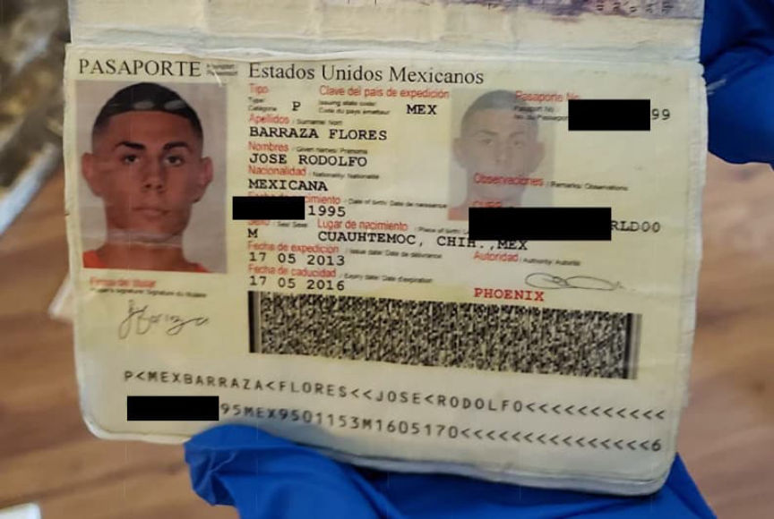
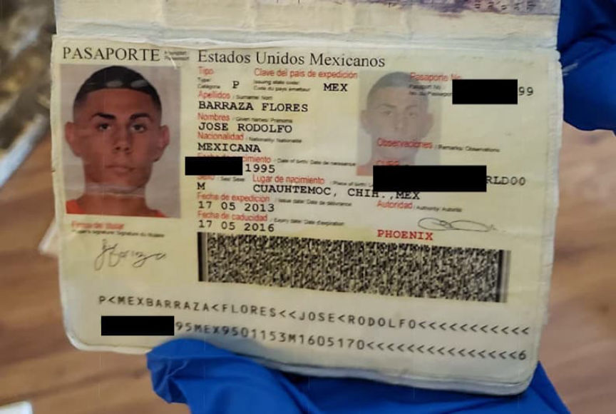

Stolen Credential Vendor Mars Extradited to the U.S.
A Ukrainian man has been extradited to the United States for allegedly stealing and selling thousands of credentials on the darkweb.
Oleksandr Ivanov-Tolpintsev, 28, of Chernivtsi, Ukraine, has been extradited to the United States where he faces four charges related to fraud. Authorities in Poland arrested the defendant on October 3, 2020. The U.S. Attorney’s Office for the Middle District of Florida filed a four-count indictment against Ivanov-Tolpintsev on the same day.

According to the indictment, Ivanov-Tolpintsev participated in crimes listed in the indictment from at least May 2016 through October 2020. The indictment alleges that Ivanov-Tolpintsev had used a botnet to carry out brute force attacks and steal login credentials from compromised computers. He then sold the stolen credentials on an undisclosed darkweb marketplace. In messages to the administrators of the darkweb marketplace, Ivanov-Tolpintsev claimed his brute force attacks allowed him to access up to 2,000 computers every week.
During the investigation, special agents with the Internal Revenue Service-Criminal Investigation (IRS-CI) contacted the victims of the defendant’s attacks. A user on the marketplace under the username Mars, believed to be Ivanov-Tolpintsev, provided the I.P. address of the breached system in his listings. IRS-CI special agents contacted the person associated with the I.P. addresses in at least two cases.
The criminal complaint lists many XMPP and email addresses associated with the vendor Mars as well as with Ivanov-Tolpintsev. Special agent Justin Allen, who authored the criminal complaint, did not reveal the steps taken to link Mars to an email address owned by Ivanov-Tolpintsev. However, the information provided by Google about the email address confirmed that it belonged to Ivanov-Tolpintsev and that Ivanov-Tolpintsev controlled several XMPP accounts associated with Mars.
In the email inbox, investigators found an email with pictures of Ivanov-Tolpintsev’s passport attached to it. They also found emails from retail stores, including vape shops, reminding him of his birthday on a certain date. In some cases, the emails from retailers referred to the account holder with a different name than Ivanov-Tolpintsev. However, they also referenced Ivanov-Tolpintsev’s known phone numbers or addresses.

In one inbox, investigators read an email that contained a transcript of a conversation between Ivanov-Tolpintsev and [email protected]. In one message, Ivanov-Tolpintsev wrote, “if possible, please write to the jabber [email protected].” Another email contained a message where Ivanov-Tolpintsev asked another party to reach him at the XMPP address [email protected].
During an investigation into the marketplace where Ivanov-Tolpintsev allegedly sold stolen credentials, law enforcement officers seized thousands of XMPP message logs between marketplace administrators, vendors, and customers. Many of those logs contained transcripts of conversations between site administrators and [email protected] or [email protected], among other addresses associated with Ivanov-Tolpintsev.
Ivanov-Tolpintsev appeared before United States Magistrate Julie S. Sneed on September 7, 2021. He faces two counts of conspiracy to traffick unauthorized access devices and two counts of conspiracy to traffick computer passwords. Ivanov-Tolpintsev, according to the U.S. government, earned at least $80,000 through the sale of stolen credentials. The U.S. government wants Ivanov-Tolpintsev to forfeit $82,648.
In court, the judge ruled that Ivanov-Tolpintsev belonged in pre-trial detention.
Oleksandr Ivanov-Tolpintsev, 28, of Chernivtsi, Ukraine, has been extradited to the United States where he faces four charges related to fraud. Authorities in Poland arrested the defendant on October 3, 2020. The U.S. Attorney’s Office for the Middle District of Florida filed a four-count indictment against Ivanov-Tolpintsev on the same day.
A picture of the defendant found in his Google Photos account.
According to the indictment, Ivanov-Tolpintsev participated in crimes listed in the indictment from at least May 2016 through October 2020. The indictment alleges that Ivanov-Tolpintsev had used a botnet to carry out brute force attacks and steal login credentials from compromised computers. He then sold the stolen credentials on an undisclosed darkweb marketplace. In messages to the administrators of the darkweb marketplace, Ivanov-Tolpintsev claimed his brute force attacks allowed him to access up to 2,000 computers every week.
During the investigation, special agents with the Internal Revenue Service-Criminal Investigation (IRS-CI) contacted the victims of the defendant’s attacks. A user on the marketplace under the username Mars, believed to be Ivanov-Tolpintsev, provided the I.P. address of the breached system in his listings. IRS-CI special agents contacted the person associated with the I.P. addresses in at least two cases.
The criminal complaint lists many XMPP and email addresses associated with the vendor Mars as well as with Ivanov-Tolpintsev. Special agent Justin Allen, who authored the criminal complaint, did not reveal the steps taken to link Mars to an email address owned by Ivanov-Tolpintsev. However, the information provided by Google about the email address confirmed that it belonged to Ivanov-Tolpintsev and that Ivanov-Tolpintsev controlled several XMPP accounts associated with Mars.
In the email inbox, investigators found an email with pictures of Ivanov-Tolpintsev’s passport attached to it. They also found emails from retail stores, including vape shops, reminding him of his birthday on a certain date. In some cases, the emails from retailers referred to the account holder with a different name than Ivanov-Tolpintsev. However, they also referenced Ivanov-Tolpintsev’s known phone numbers or addresses.

A picture of the defendant's passport found by federal investigators.
In one inbox, investigators read an email that contained a transcript of a conversation between Ivanov-Tolpintsev and [email protected]. In one message, Ivanov-Tolpintsev wrote, “if possible, please write to the jabber [email protected].” Another email contained a message where Ivanov-Tolpintsev asked another party to reach him at the XMPP address [email protected].
During an investigation into the marketplace where Ivanov-Tolpintsev allegedly sold stolen credentials, law enforcement officers seized thousands of XMPP message logs between marketplace administrators, vendors, and customers. Many of those logs contained transcripts of conversations between site administrators and [email protected] or [email protected], among other addresses associated with Ivanov-Tolpintsev.
Ivanov-Tolpintsev appeared before United States Magistrate Julie S. Sneed on September 7, 2021. He faces two counts of conspiracy to traffick unauthorized access devices and two counts of conspiracy to traffick computer passwords. Ivanov-Tolpintsev, according to the U.S. government, earned at least $80,000 through the sale of stolen credentials. The U.S. government wants Ivanov-Tolpintsev to forfeit $82,648.
In court, the judge ruled that Ivanov-Tolpintsev belonged in pre-trial detention.